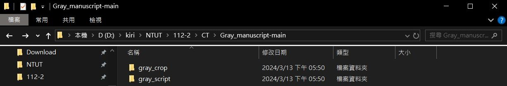
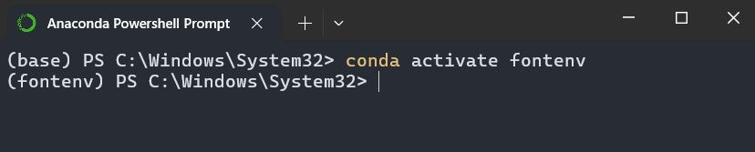
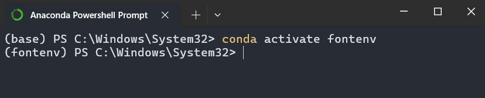

心得
這份作業的主要目的是進行掃描後稿紙的校正，以方便後續對文字的切割。
感謝助教提供了非常清晰和明確的操作步驟！基本上只要照著步驟做，就能順利得到切割完的自己的 5,345 個手寫字。
距離做完自己的手寫字體只差幾步之遙了~
感謝助教提供了非常清晰和明確的操作步驟！基本上只要照著步驟做，就能順利得到切割完的自己的 5,345 個手寫字。
距離做完自己的手寫字體只差幾步之遙了~
Simple baseline - 專案下載、安裝虛擬環境



Medium baseline -旋轉校正手寫稿紙
Strong baseline - 成功執行切割程式並取得檔案